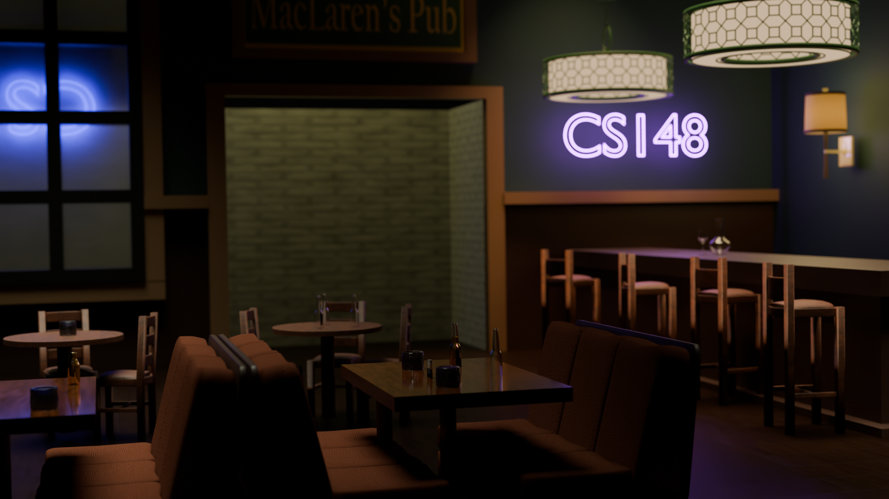

CS148 · Introduction to Computer Graphics · Spring 2026
A photorealistic Blender Cycles recreation of MacLaren's Pub — featuring ray-traced global illumination, neon color bleeding, physically based materials, UV-mapped textures, and depth of field.
For CS148's final project, the goal was to create a photorealistic scene in Blender using Cycles ray-tracing — demonstrating soft shadows, indirect illumination, physically based reflections, and realistic material behavior.
We recreated MacLaren's Pub from How I Met Your Mother: the booths, the bar, the neon signs, the frosty windows — and replaced the original pub sign with a glowing "CS148" neon light that became the scene's primary light source. The neon sign's purple glow bleeds onto surrounding surfaces, the glossy tabletops reflect it accurately, and depth of field pulls focus to the foreground seating area.
A significant portion of the scene's geometry was modeled from scratch in Blender, with the rest carefully imported and re-textured with custom materials and shaders.
The "CS148" neon sign uses an emissive material and acts as the scene's dominant direct light — producing a strong purple global illumination effect that bleeds visibly onto nearby walls, booths, and barstools. This was the key demonstration of Cycles' color bleeding and indirect illumination capabilities. The blue neon signs on the window side create a secondary cool light that competes with the purple, giving the scene its moody color contrast.
Ceiling lamps emit light as area sources — producing natural, soft-edged shadows rather than the harsh shadows of point lights. Every surface in the scene receives indirect illumination from multiple bounces, giving the bar its realistic ambient quality.
Glossy tabletops carry physically accurate reflections of the objects on them and soft streaks of neon light. Glassware uses a shader for accurate transmission and reflection. The frosty windows let backlight through while maintaining a frosted, textured look.
An area light behind the hallway wall simulates the brighter alley entrance and separates the two rooms visually. The wall lamp uses a custom transmissive shader — light passes through from inside, giving it that fabric-shade quality instead of looking like a solid emitter.